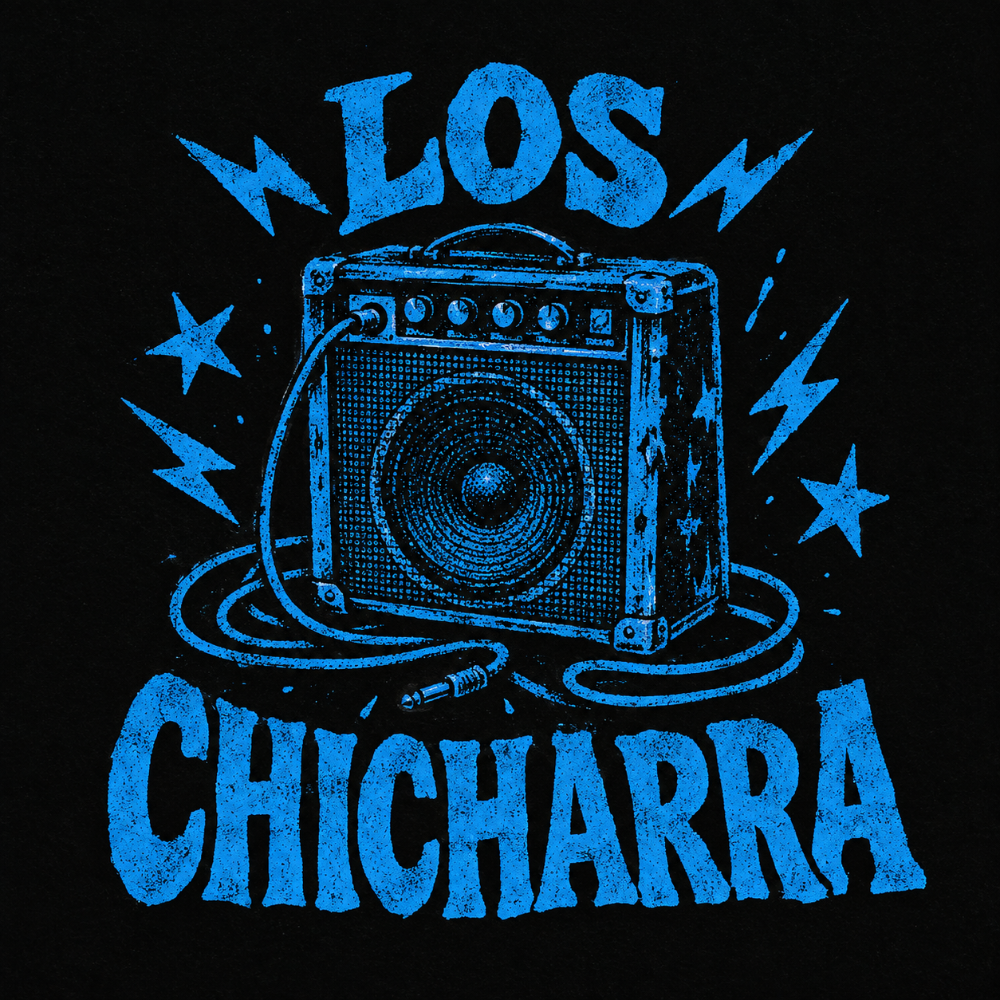
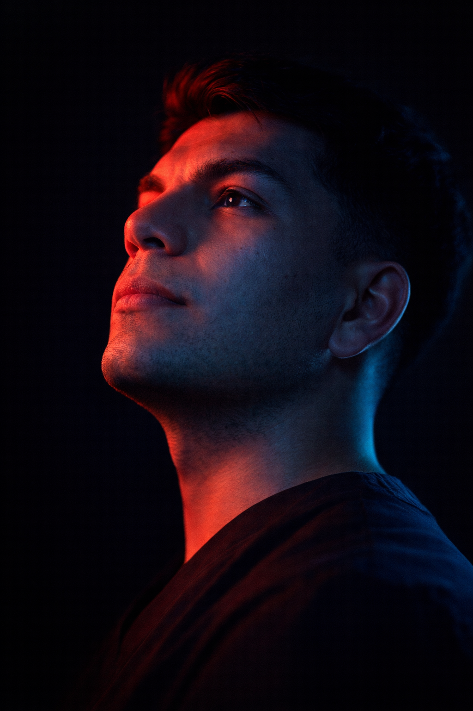

01
Voz + Guitarra
Dubán
Frente de la banda y motor creativo. Su voz y su guitarra marcan el tono de Los Chicharra con intensidad y presencia directa.
Molina · Chile · Est. 2025
Rock Chicharra
Ruido crudo, identidad propia y canciones hechas para sonar fuerte.

Sobre Los Chicharra
Somos una banda nacida en Molina que fusiona punk rock, rock alternativo, blues rock y balada rock. De esa mezcla salió un estilo que hicimos nuestro: Rock Chicharra. Sonido sin maquillaje, actitud directa y una identidad que estamos construyendo dentro de la escena molinense.
Frente de la banda y motor creativo. Su voz y su guitarra marcan el tono de Los Chicharra con intensidad y presencia directa.

02La pegada y la dinámica del grupo. Sostiene la energía del directo y empuja cada tema hacia un sonido vivo y contundente.
El pulso y la base que sostiene cada canción, más una segunda voz que le da cuerpo al sonido. Peso, tensión y firmeza.
Los Chicharra — Música
Buena parte del repertorio que tocamos hoy con Los Chicharra nace de dos proyectos anteriores. Estas son nuestras raíces — DEScaro y Dubban — y varias de estas canciones siguen sonando fuerte en nuestros shows.
El proyecto anterior de Dubán y Simón. Algunas de sus canciones forman parte del repertorio actual de Los Chicharra.
El proyecto solista de Dubán. Varias de estas canciones también forman parte de lo que interpretamos hoy con la banda.
De DEScaro a Dubban, y de ahí a Los Chicharra: el mismo ruido, evolucionando.
Nuestra identidad
No es un género que buscamos en un manual. Es lo que pasa cuando agarramos el punk rock, el rock alternativo, el blues rock y la balada rock, los metemos en la misma sala de ensayo y los dejamos pelear hasta que suenen a nosotros.
Crudo cuando tiene que serlo, con alma cuando lo pide la canción. Un ruido de Molina que no se parece a nadie más — y esa es exactamente la idea.
Sigue el ruido
Fechas, ensayos, adelantos y todo el detrás de escena. Estamos construyendo esto en vivo — súmate al ruido.
@los_chicharra_ Síguenos en Instagram